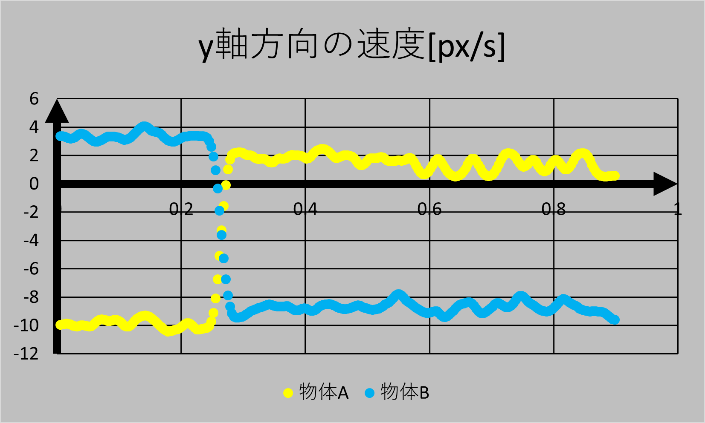
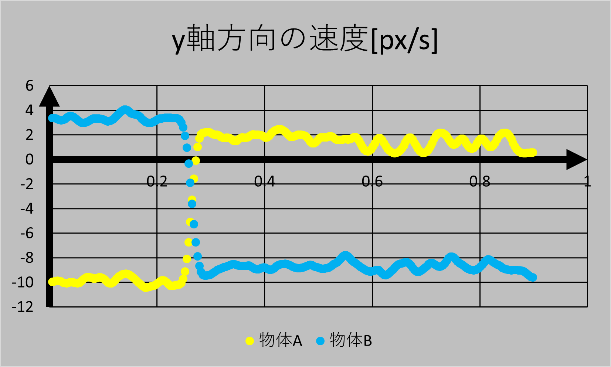
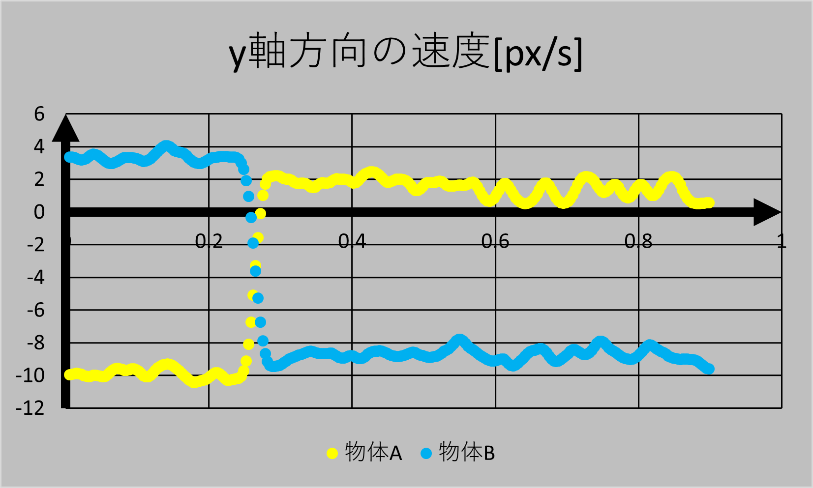

円運動・慣性力
2020年度 物理研究 長倉クラス
１月~
授業資料(Web版)こちら
物理研究のトップページはこちら
ふりこと張力
まずは動画を見てください。
このブラウザでは動画はサポートされていません。Google Chrome等でご覧ください。
今日の課題
物体にはどんな力がはたらいていますか？
どんな例が考えられますか？
例１
このブラウザでは動画はサポートされていません。Google Chrome等でご覧ください。
例2
このブラウザでは動画はサポートされていません。Google Chrome等でご覧ください。
例3
このブラウザでは動画はサポートされていません。Google Chrome等でご覧ください。
例4
このブラウザでは動画はサポートされていません。Google Chrome等でご覧ください。
例3を丁寧に考えよう。
--
具体例
電車
遠心力
実はもう一つ
このブラウザでは動画はサポートされていません。Google Chrome等でご覧ください。
このブラウザでは動画はサポートされていません。Google Chrome等でご覧ください。
遠心力を元に考えると…
おまけ
平面の運動量
チョン押し
平面での衝突
動画
軌跡
ストロボ映像
運動のグラフ(x方向)
運動のグラフ(y方向)



 
